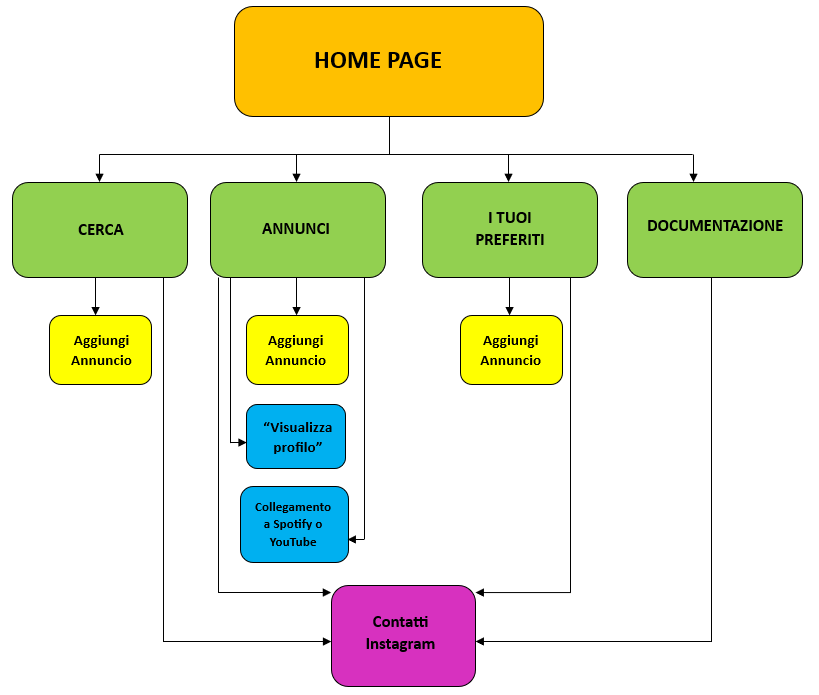

Obiettivi: offrire un servizio per artisti che volgiono farsi conoscere e suonare la loro musica live; e per locali che vorrebbero organizzare eventi trovando qualcuno che fa al caso loro.
Target utente: giovani artisti (under 30), organizzatori di eventi e proprietari di locali.
Competitor:
- Musiqua è un sito che permette di cercare soprattutto band e dj per eventi
(matrimoni,feste di compleanno, concerti, ecc.).
- Villaggio Musicale è un sito di annunci dove musicisti e/o cantanti
cercano altri artisti del settore (Per esempio: band che cerca un bassista;
"Cerco pianista a Rovigo"; ecc.).
- Kleisma.com è un sito di annunci che offre anche un servizio di ricerca di insegnanti, video tutorial
e guide scritte.
Architettura del sito:

Wireframe:
Legenda del colori:
- Rosso = Header
- Verde = Nav
- Azzurro = Body
- Giallo = Section
- Blu = Testo
- Grigio = Immagine
- Fucsia = Footer
- Viola = Bottone


Look and Feel:
- Scelta dei Font: Orbitron (san-serif) per il titolo e Lora corsivo (serif) per il corpo testo.
- Scelta dei colori: MANCA
- Altre scelte grafiche: abbiamo creato il logo e inserito prima del footer elementi grafici a tema music riprendendo
gli stessi colori utilizzati nel resto del sito.
Le scelte sono state fatte in funzione di rendere tutto più coerente e coeso.
Linguaggi: Html, Css e Javascript
Strumenti:
- Visual Studio COde per la trascirizione del codice
- Google Font: per i font del testo
- Fontaewsome: per le icone
- Canva: perla creazione del logo e delle grafiche prima del piè di pagina
- Paint: per la creazione dei WIreframe
- Word: per la creazione del disegno ad albero
- Pexels: per inserire immagini senza licenza
- bootstrap
- Google Analytics: per monitorare le visite al sito
- GitHub: per la pubblicazione